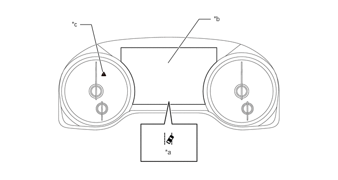
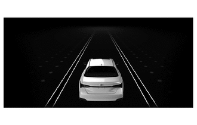
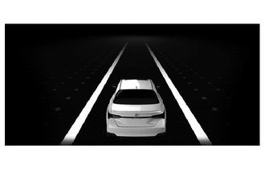
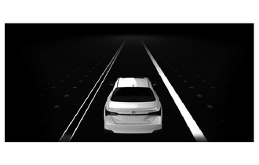
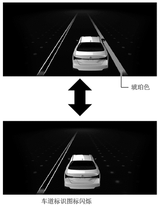
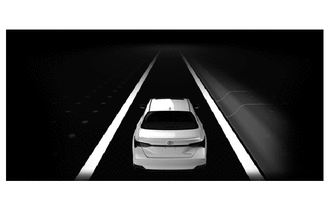
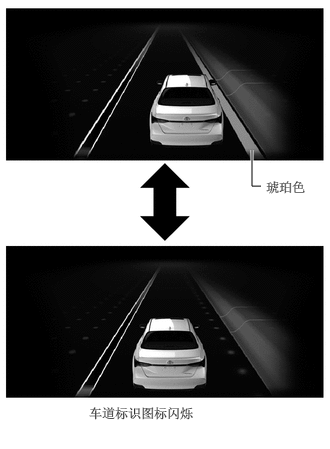
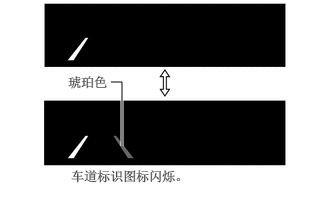

工作原理
组合仪表总成根据相应状况点亮指示灯或在多信息显示屏上显示指示，并鸣响蜂鸣器（内置于组合仪表总成）。

| *a | 车道偏离警示指示灯（LDA 指示灯） | *b | 多信息显示屏 |
| *c | 主警告灯 | - | - |
| 条件 | 多信息显示屏（行驶辅助显示屏）* | 蜂鸣器 | |
|---|---|---|---|
|
*：这些插图为示例。 |
|||
| 转向辅助关闭 | LDA
Turned ON Steering Assist Inactive（LDA 打开，转向辅助未激活） |
点亮（白色） | - |
| 转向辅助打开 | LDA
Turned ON Steering Assist Active（LDA 打开，转向辅助激活） |
点亮（白色） | - |
·
转向辅助不可用 ·
未检测到标识 |
 |
点亮（白色） | - |
·
转向辅助不可用 ·
检测到车道标识 |
 |
点亮（白色） | - |
·
转向辅助不可用 ·
检测到一个车道标识 |
 |
点亮（白色） | - |
·
转向辅助不可用 ·
检测到一个车道标识（右侧） ·
车道偏离警告工作 |

2.76,1.875 2.604,1.875
2.604,1.875 2.604,1.5
true
0.885,4.229 2.729,4.479
1.833,0.24
10
false
车道标识图标闪烁
2.813,1.781 3.323,2.031
0.5,0.24
10
false
琥珀色
|
闪烁（琥珀色） | 鸣响 |
·
转向辅助可用 ·
检测到车道标识 ·
带转向辅助的车道偏离警示系统工作 |
 |
点亮（绿色） | - |
·
转向辅助可用 ·
检测到一个车道标识（右侧） ·
带转向辅助的车道偏离警示系统工作 ·
车道偏离警告工作 |

2.719,1.938 2.625,1.938
2.625,1.938 2.625,1.563
true
0.927,4.219 2.646,4.51
1.708,0.281
10
false
车道标识图标闪烁
2.771,1.865 3.333,2.073
0.552,0.198
10
false
琥珀色
|
闪烁（琥珀色） | 鸣响 |
| 车辆摇摆警告 | 条件 | 多信息显示屏 |
|---|---|---|
| 接通 | ·
车辆摇摆警告工作。 ·
检测迷失方向导致的连续交通车道偏离。 ·
执行优先显示并鸣响蜂鸣器。 |
Please Take a Break（请休息一下） |
| 接通 | ·
车辆摇摆警告工作。 ·
检测到由于注意力低下（分神）而发生缓慢偏移。 ·
检测到由于驾驶员注意力低下（困倦）导致转向频率降低后突然进行转向操作。 ·
执行优先显示并鸣响蜂鸣器。 |
Would You Like to Take a Break?（您是否需要休息？） |
| 条件 | 多信息显示屏 | 主警告灯 | 蜂鸣器 |
|---|---|---|---|
|
*：显示变化时 |
|||
| 系统故障。 | LDA
Malfunction Visit Your Dealer（LDA 故障，请前往经销店） |
点亮 | 鸣响 |
| 由于除前向识别摄像机外的传感器而暂时不可用时。 | LDA
Unavailable（LDA 不可用） |
点亮 | 鸣响 |
| 车速约为 32 mph (50 km/h) 或更低 | LDA
Unavailable Below Approx. 32 MPH (50 km/h)（低于约 32 MPH (50 km/h) 时 LDA 不可用） |
- | - |
| 在车道偏离警示主开关打开（转向辅助可用）的情况下，未检测到手握方向盘。 | LDA
Hold Steering Wheel*（LDA，握住方向盘*） |
- | - |
| LDA
Steering Assist Unavailable Hold Steering Wheel*（LDA，转向辅助不可用，握住方向盘*） |
点亮 | ||
抬头显示装置工作时，工作的车道偏离警示与多信息显示屏指示灯同步且抬头显示装置上显示车道偏离警示。
| 条件 | 抬头显示装置* |
|---|---|
|
*：此插图为示例。 |
|
·
车道偏离警示主开关打开 ·
抬头显示装置工作 ·
检测到车道标识 ·
车道偏离警示工作 |

1.156,0.854 1.271,0.854
1.271,0.854 1.271,1.521
true
0.74,1.75 2.542,2.021
1.792,0.26
10
false
车道标识图标闪烁。
0.708,0.771 1.167,1.01
0.448,0.229
10
false
琥珀色
|